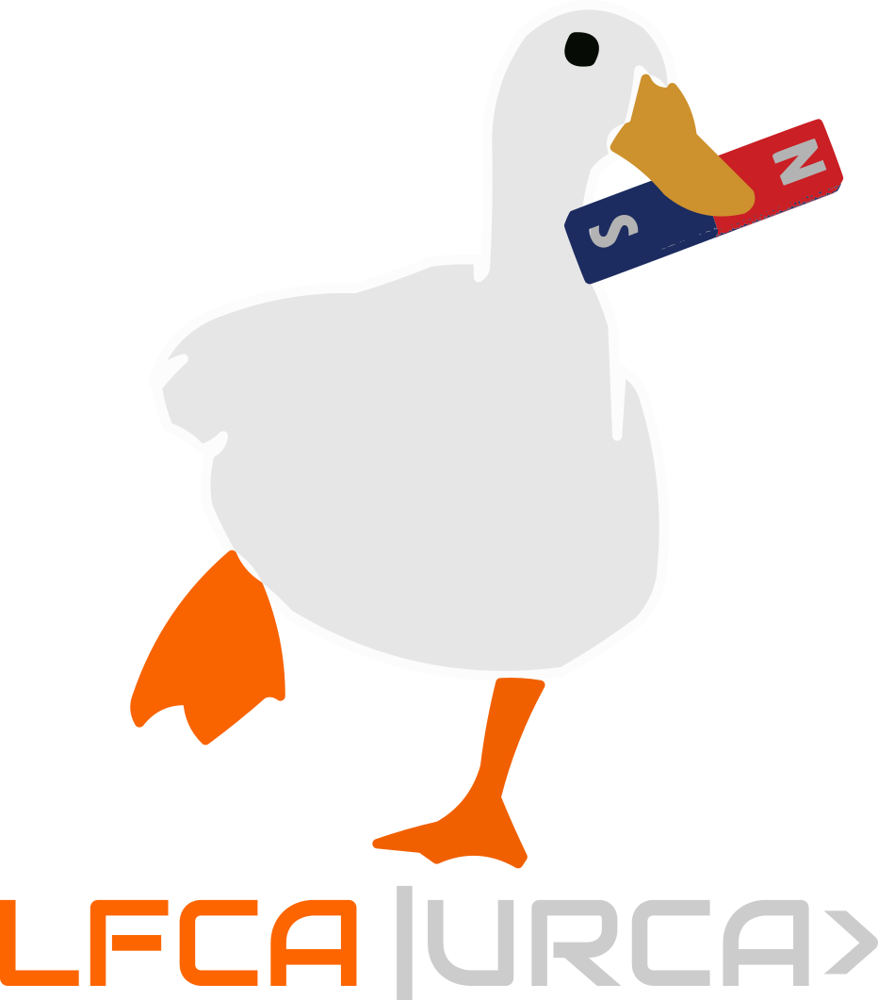

1600
Gilbert separa o elétrico do magnético e propõe a Terra como ímã.

Da pedra que atrai o ferro até a luz que é campo: as três disciplinas da sequência, com o que se deduz no quadro, o que se resolve no papel e o que só sai no computador.
Dois fatos esquisitos chegaram até nós da Antiguidade, e por quase dois mil anos ninguém desconfiou que tivessem qualquer parentesco. Um pedaço de âmbar atritado em lã atrai palha, folha seca, fiapo de qualquer coisa leve, e os gregos chamavam essa resina de élektron. Uma pedra escura achada na região da Magnésia, a magnetita, atrai ferro sem precisar ser atritada, e sempre aponta na mesma direção quando pendurada por um fio. Atração sem contato, nos dois casos, e nenhuma pista do que estivesse acontecendo no meio.
A separação cuidadosa das duas coisas é trabalho de William Gilbert, médico da corte inglesa, que em 1600 publicou o De Magnete. Ele mostra, com experimento atrás de experimento, que a atração do âmbar aparece em dezenas de outros materiais e some com a umidade, enquanto a da magnetita é exclusiva de poucos minerais, não some, e tem dois polos que não se deixam separar. E arrisca a tese que até hoje se ensina na quinta série: a Terra inteira é um ímã, e é por isso que a bússola funciona.
O século XVIII passou inteiro produzindo eletricidade e quase nenhuma teoria. Máquinas de atrito, garrafas de Leiden, faíscas de palmo, demonstrações de salão em que uma fila de monges levava choque ao mesmo tempo, e a pipa de Franklin na tempestade. O que faltava era medida, e ela vem com Coulomb, em 1785, numa balança de torção tão sensível que o deslocamento angular de uma agulha de palha traduz a força entre duas bolinhas carregadas. O resultado é uma lei do inverso do quadrado, idêntica em forma à da gravitação, e daí em diante a eletrostática é assunto de matemática.
Faltava a corrente, e ela chega em 1800 com a pilha de Volta: discos de zinco e cobre alternados, separados por papelão em salmoura, fornecendo um escoamento contínuo de carga em vez do estouro de uma garrafa de Leiden. Vinte anos depois, numa aula em Copenhague, Ørsted nota que a agulha de uma bússola deitada perto de um fio ligado à pilha gira. Não é um detalhe de laboratório: a agulha não aponta nem para o fio nem ao longo dele, e sim perpendicularmente aos dois, coisa que nenhuma força conhecida fazia. Em poucos meses Ampère e a dupla Biot e Savart tinham transformado o espanto em fórmula.
Se a corrente faz campo magnético, o inverso deveria valer, e a busca por esse inverso ocupou Faraday por dez anos. A resposta, em 1831, é que o ímã parado não faz nada, e o que gera corrente é a variação: aproximar, afastar, ligar, desligar. Faraday, que não tinha formação matemática, pensava em linhas de força preenchendo o espaço, e essa imagem de campo, que os continentais achavam ingênua, Maxwell traduziu em equações. Ao fazê-lo, percebeu que a lei de Ampère estava incompleta, acrescentou o termo que faltava, e o sistema devolveu uma equação de onda cuja velocidade, calculada a partir de duas constantes medidas em bancada, dava a velocidade da luz. A conclusão está escrita no artigo de 1865 (doi:10.1098/rstl.1865.0008): a luz é uma onda eletromagnética.
A previsão ficou no papel por vinte anos, até Hertz produzir essas ondas com um centelhador e detectá-las do outro lado da sala com um anel de fio, medindo-lhes o comprimento e a velocidade. Hertz morreu antes de ver o que fizeram com isso. E ainda havia uma pedra no sapato: a lei de indução dava a mesma corrente quer se movesse o ímã, quer se movesse a espira, mas por duas explicações diferentes. É exatamente com essa assimetria que Einstein abre o artigo de 1905 (doi:10.1002/andp.19053221004), intitulado, não por acaso, Sobre a eletrodinâmica dos corpos em movimento. O eletromagnetismo não é uma teoria encerrada no século XIX: é a porta de entrada da relatividade.
Gilbert separa o elétrico do magnético e propõe a Terra como ímã.
Coulomb mede a força entre cargas e acha o inverso do quadrado.
Volta empilha zinco e cobre, e nasce a corrente contínua.
Ørsted vê a agulha girar perto do fio, perpendicularmente a ele.
Faraday descobre que campo que varia no tempo gera corrente.
Maxwell fecha as equações e identifica a luz com a onda do campo.
Hertz fabrica e detecta a onda prevista, numa sala de aula.
Einstein parte de uma assimetria da indução e chega à relatividade.
A ordem em que as coisas foram descobertas não é a ordem em que elas se aprendem, e tentar ensinar pela história custa caro: o aluno gastaria um semestre com fluidos elétricos e linhas de força antes de escrever a primeira divergência. A sequência segue então a ordem lógica, que é a do livro do Griffiths: primeiro as cargas paradas, depois as cargas em movimento permanente, e por fim o que acontece quando tudo muda com o tempo. Cada disciplina ocupa três ou quatro capítulos, e as páginas deste site são numeradas por capítulo, não por aula, para o aluno abrir o livro e o site na mesma página.
4º semestre · pré-requisito DF003, DM004 · 60 horas · 30 encontros de duas horas
Eletrostática. Técnicas especiais na eletrostática. Campos elétricos na matéria.
5º semestre · pré-requisito DF032 · 60 horas · 30 encontros de duas horas
Magnetostática. Campos magnéticos na matéria. Eletrodinâmica.
6º semestre · pré-requisito DF033 · 60 horas · 30 encontros de duas horas
Leis de conservação. Ondas eletromagnéticas. Potenciais e campos. Radiação.
Cada capítulo tem a mesma estrutura. A teoria é deduzida do começo, sem pular passagem; os exemplos são resolvidos por extenso, com as contas à vista, e não com um "é fácil mostrar que"; e no fim há sempre um programa em Python que resolve o mesmo problema por outro caminho, para o aluno conferir o que fez no papel.
O caminho inteiro, do princípio físico até a fórmula, com as hipóteses ditas na hora em que são usadas.
Um problema concreto, com a álgebra escrita linha a linha e o resultado checado em algum limite conhecido.
Um widget na própria página para mexer nos parâmetros e ver o campo responder, sem instalar nada.
Um arquivo .py comentado, para baixar e executar no Spyder,
que reproduz e estende o que a página mostrou.
Boa parte do que esta disciplina pede não tem solução fechada. A equação de Laplace numa região de forma qualquer, o campo de uma distribuição que não é simétrica, a trajetória de uma carga num campo que varia: todos esses casos são triviais para um método numérico e impossíveis no papel. Os programas do site estão organizados por técnica, e não por capítulo, porque a mesma relaxação que resolve o capacitor resolve depois o guia de onda.
Os códigos usam apenas numpy, scipy e
matplotlib, rodam no Spyder sem configuração nenhuma, e cada um
traz no cabeçalho o que resolve, o que imprime e como saber se acertou.
A lista completa está na página do código.
Eletrodinâmica. O livro-texto da sequência: a numeração deste site é a dele, e os exemplos e problemas citados são os seus.
Teoria do Eletromagnetismo. Em português, com mais detalhe algébrico nas passagens que o Griffiths resume.
Fundamentos da Teoria Eletromagnética. O clássico das bibliotecas, forte em meios materiais.
Classical Electrodynamics. Para quem for adiante: a referência das seções mais avançadas de Eletromagnetismo III.